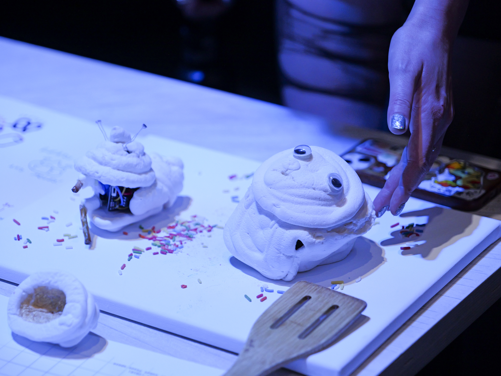

Marshmallow Robots: Edible Human-Robot-Interaction
Klara Nitsche, Dr. Ellen Do | ATLAS Institute, CU Boulder | MS Capstone
Published Poster at Creativity & Cognition 2026
Robots & AI • HRI • Edible Computing
I am curious about robots and their fluctuation between social roles of 'object', 'agent', 'worker', 'pet', and 'companion'. To provoke the boundaries of these roles, I offer a new mode in engagement: eat the robot.
I used homemade marshmallows as a design tool in this project to explore what soft, squishy, edible robots would look, feel, and taste like. I chose to use marshmallows because of their affordable, highly customizable production process and short 'freshness' cycle- meaning that the resultant robot body will 'age', 'decay', and transform through physical interaction.
Inspired by the growing field of transient robotics and edible computing, I made two technical prototypes using analog electronics drawing on the 1990's BEAM robots made by Mark Tilden. The 'nervous' networks produced by analog electronics animated the marshmallow bodies with an erratic, wiggling motion that put focus on the form and material as interactive components. One robot included an edible circuit, where edible gold leaf adhered to the surface of a marshmallow offered an edible button mechanic. By pressing down on the marshmallow surface, the edible gold would complete a circuit that shut off the motors and lit an LED.
A pilot demonstration of the robots was conducted at ATLAS Institute, with 12 prticipants over two hours engaging with the robots.
